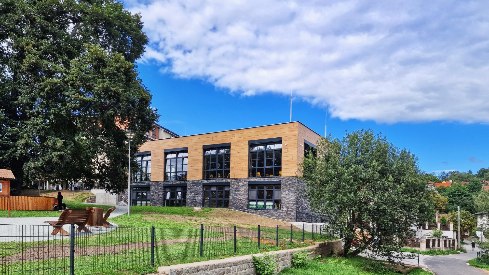

Jídelna
Stravování je zajištěno ve vlastní školní jídelně.
Naše jídelna je určena až pro tisíc strávníků. Vaří obědy nejen pro žáky naší základní školy, gymnázia, ale i pro cizí zájemce.
Objednat obědy zde: e-jidelnicek.cz
